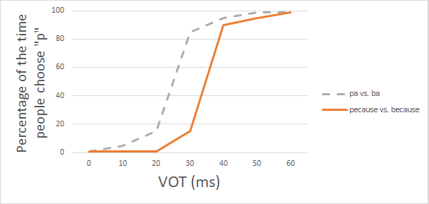
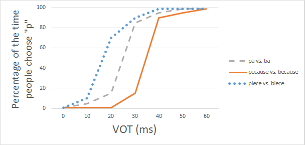

In answering the previous question, here's the sort of graph I would predict:

Did your graph look approximately like this?
Why would I expect this pattern of results? Explain why I predict the results like this. (Think about how "because-pecause" is different than "ba-pa", for English
speakers.)
Now imagine I do this experiment again, but with a new set of sounds. Instead of using ba-pa or because-because, now I use the sounds biece-piece. Again, I edit the sound to have different
VOTs. And I do the experiment with English speakers.
What do you predict the results to look like? Draw your results (add them to the previous graph, so that I can see one graph with three lines: one line for ba-pa, one line for
because-pecause, and one line for biece-piece.)
Here's the graph I would expect:

Hopefully you have figured out why this would be expected.
For "pa" vs. "ba", the line is in the middle. This represents how people might recognize the sounds when there's no extra information to bias the way they respond.
But for "because" vs. "pecause", their response might be influenced by knowledge of words. Because is a real word in English, but Pecause is not. Therefore, when people
hear a sound that's a little ambiguous, they might prefer to interpret it as because, because that's a real word. Therefore, around 20 milliseconds or so (the area right on the
border between "b" and "p", where sounds might sound kind of halfway between "b" and "p"), people tend to choose "b" a lot; in other words, then rarely choose "p". Overall, this line is
lower than the pa/ba line, because people choose "p" less.
For "biece" vs. "piece", the situation is the opposite. Piece is a real word in English, but Biece is not. Therefore, when people hear an ambiguous sound, they might
prefer to interpret it as "piece" rather than as "biece". The line for piece/biece is higher than the others, because people choose "p" more.
This pattern is known as the Ganong effect (named after the name of the person who did an experiment discovering it). We choose a certain sound ("p", in this example) more
often in a context where that sound creates a real word ("_iece") than we do in a context where that sound would create a non-word ("_ecause"). Here is a recent short paper about Ganong effects in Mandarin, if you want to read more.
Design a Ganong effect paradigm in your own language. That means you should choose three pairs of sounds, just like I did here. You should choose one pair where the
aspirated sound makes a real word and the unaspirated sound does not; one pair where the unaspirated sound makes a real word and the aspirated sound does not; and one neutral pair
(either both sounds make real words, or both make non-words). Don't use words from a published paper or example you find online; come up with your own words.
Draw a graph of your expected results, with the lines labeled. (If your experiment uses a language other than English, Cantonese, Mandarin, or French, then you will also need to provide
English translations.)
Last question! Please write a self-reflection about what you learned in this module. That could mean summarizing the main points in your own words, or it could mean raising questions about
something you didn't understand, problems or criticisms, pointing out something you disagreed with, suggesting some further issue that builds off of the things in this module, etc.